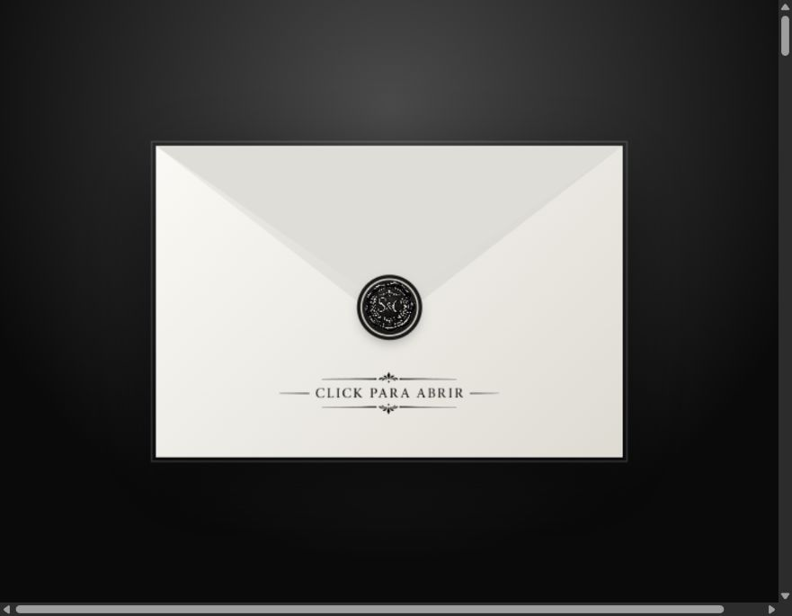

Ver página completa ↗
BODA · INVITACIÓN DIGITAL
Sheccid & Caleb
Una invitación elegante en negro, blanco y plata. La experiencia comienza con un sobre interactivo y guía a los invitados por la historia, fotografías y detalles de la celebración.
Esta página contiene
- Música
- Cuenta regresiva
- Historia
- Galería
- Itinerario
- Ubicación
- Vestimenta
- Regalos
- Confirmación RSVP
- Hashtag